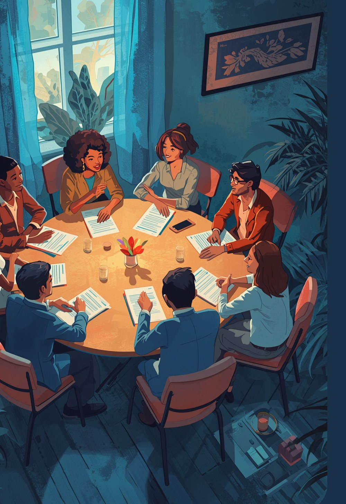

The leader whose story drifts
On a good day it lands. An all-hands that soared, a board update that fell flat, and no clear reason why. The Lab turns those scattered moments into a pattern you can repeat on purpose.
A small room of leaders working their stories together over time. You bring your own result as the case. The cohort brings what no consultant can: people with no reason to flatter you.

The Lab was built for the most common result we see, and for the leader who does better work with company.
On a good day it lands. An all-hands that soared, a board update that fell flat, and no clear reason why. The Lab turns those scattered moments into a pattern you can repeat on purpose.
Some stories sharpen fastest against other stories. In the Lab you hear how a founder, an operator, and a school leader each solve the same problem, and your own answer gets braver for it.
A handful of leaders, live sessions across several weeks, light work between them. The same spine runs through it.
You arrive with your assessment as your case. First sessions surface the stories you already carry: the ones you tell, the ones you avoid, the ones others tell about you.
The cohort is the instrument. You tell your story to people who owe you nothing, and you watch where they sit forward and where they reach for their phones. That data does not lie.
You draft a working version of your leadership story, pressure-test it across the sessions, and plan one high-stakes moment where it goes live: a keynote, a raise, a hard conversation.
A story that has survived contact with strangers. A plan for the one moment that matters most in your next quarter. And a bench of peers who know your story well enough to call you when you drift back to the police report. They will. That is the point.
Readers who want more than the book but are not ready for the full workbook start with the shorter companion. Leaders ready to work on the page bring the Field Guide into the room.
Each participant gets time with me one to one. Some leaders find the Lab is exactly enough. Others discover their organization needs the work too, and the Sprint is waiting.
When you told your story to someone with nothing to gain from liking it, what did their face tell you?
Labs run in small cohorts and they fill quietly. If your result pointed you here, reach out and I will tell you when the next room opens and whether it is your room.